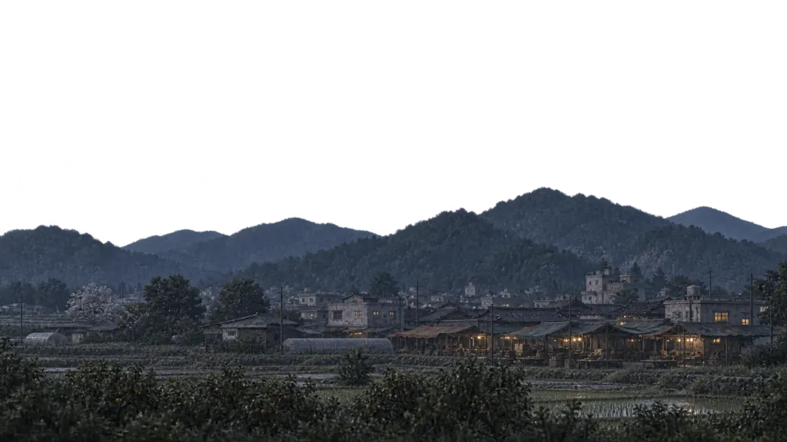
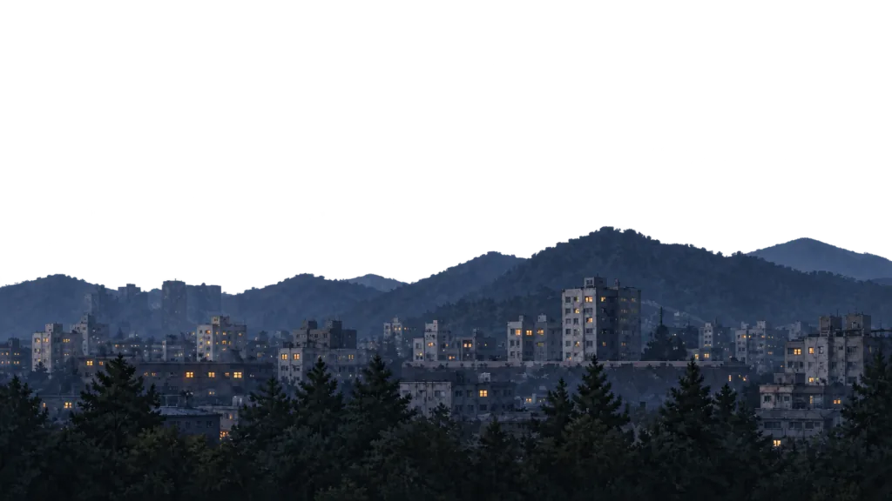
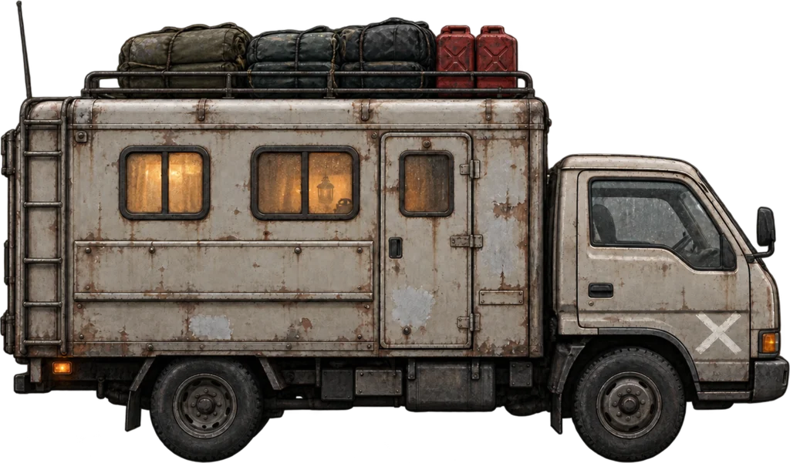

정적 배치 초안 · 게임 미적용양산 고가차도
닫기무너진 고가 아래로 길이 하나 살아 있다. 콘크리트 기둥 사이로 북쪽 국도가 이어진다.
도착하면
주변을 직접 탐색할 수 있다. 차를 세운 뒤 남은 구조물과 쓸 만한 물자를 살펴본다.
기본 화면에는 짧은 예고를, 여기에는 사진과 자세한 설명을 둡니다. 닫으면 보고 있던 여정 패널로 돌아갑니다.
이동 구간
닫기배치 설명용 개략도 · 실제 지형 지도 아님
이동 경로를 확인하는 자리는 남겨 둡니다. 실제 연결 시에는 기존 전체 지도를 열고, 닫으면 원래 화면으로 돌아옵니다.
이 초안에서는 목적지를 바꾸거나 시간을 진행하지 않습니다.
보급 기록
닫기점심 식사
식량 ∞ · 테스트 소모 없음
현재 STOP 화면에 있던 기록입니다. 추가 식사를 실행하거나 자원을 바꾸지 않습니다. 일반 기록만 작게 정리하고, 연료 부족 같은 위험 안내는 별도로 눈에 띄게 표시해야 합니다.
기존 행동 선택창 유지
닫기할 일을 고르고, 시간과 비용을 확인한 뒤 실행합니다. 선택만으로 게임 행동이 시작되지는 않습니다.
- 정착지 안으로
- 주변 탐색
- 야영 준비
- 차체 정비
- 라디오 수리
실제 목록은 장소와 보유품에 따라 달라집니다. 이번 초안은 세 상태의 높이 비교에 집중하며, 선택창 자체는 다시 설계하지 않습니다.
기존 목적지 선택창 유지
닫기갈 수 있는 경로와 예상 시간·소모량을 확인하고 고릅니다. 취소하면 이전 선택으로 돌아옵니다.
출발 전 예시는 현재 주행 구간인 밀양 → 양산을 사용했습니다. 실제 과거 화면을 복원한 것은 아닙니다. 도착 후 목적지나 예상 시간은 이 초안에서 임의로 정하지 않았습니다.
메인 스토리 기록으로
닫기기존 ‘부모님이 탄 다음 차’ 기록을 여는 자리입니다. 목표나 이야기 진행을 변경하지 않습니다.